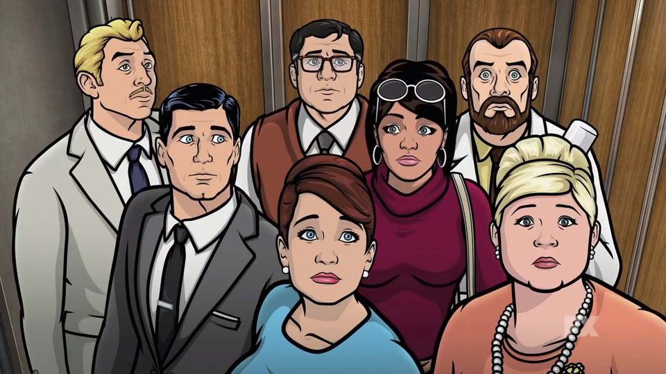

🦇🦸♂️ «Арчер» — это тот самый сериал, где шпионские миссии идут рука об руку с бесконечными семейными разборками, словно в ЦРУ работает не разведка, а филиал «Семейного психолога»!

Представьте себе: международные заговоры, секретные операции и... бесконечные споры о том, кто последний раз оставил микроволновку открытой. Да-да, в этом шпионском дурдоме даже у секретных агентов есть свои скелеты в шкафу — и они явно не прячут их в сейфах! Здесь каждый второй — мастер сарказма, а каждый первый — виртуозно путает секретные документы с рецептами бабушкиных пирожков. В мире Арчера даже ядерный апокалипсис — не повод прервать совещание по поводу того, кто будет оплачивать счета за электричество!
Шпионы, интриги, расследования... и всё это приправленное острым соусом абсурда и щедро политое соусом чёрного юмора. Идеальный сериал для тех, кто любит, когда шпионы шутят не хуже стендаперов, а секретные базы больше напоминают сумасшедший дом с видом на Кремль. P.S.: Если вы ещё не смотрели «Арчер», знайте — вы пропустили самое нелепое и уморительное шпионское приключение в истории телевидения!